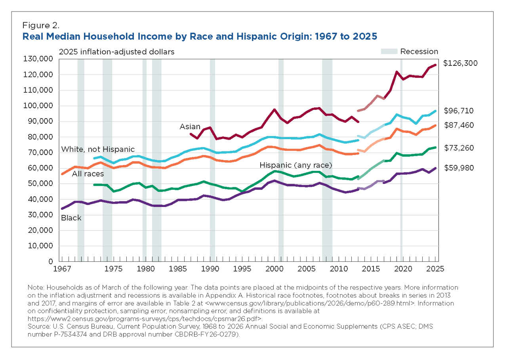
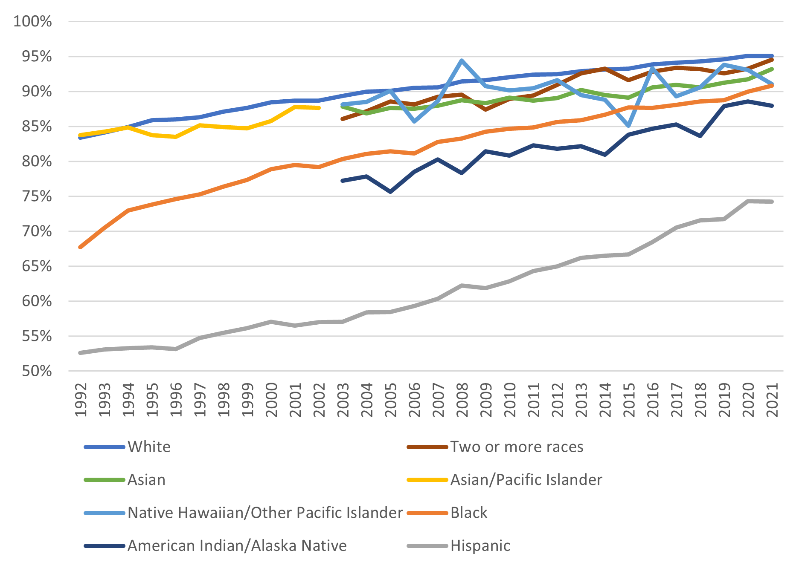

According to Patricia Hill Collins and Sirma Bilge (2016), intersectionality is "a way of understanding and analyzing the complexity in the world, in people, and in human experiences. The events and conditions of social and political life and the self can seldom be understood as shaped by one factor. They are generally shaped by many factors in diverse and mutually influencing ways. When it comes to social inequality, people's lives and the organization of power in a given society are better understood as being shaped not by a single axis of social division, be it race or gender or class, but by many axes that work together and influence each other."
The ways that various axes of identity overlap and influence each other in relation to social inequality is a very important component of this definition. It is difficult to deny the fact that social inequality exists within our world. For example, according to the US Census, while household income has slowly increased over the past 6 decades for all Americans, median household income, as of 2025, is still clearly and drastically divided along racial lines. Another example is educational disparities. According to the US Department of Treasury, Hispanic households have the lowest high school completion rates, followed by those under the category of "American Indian/Alaska Native", with indivduals who are categories as White and "Two or more races" competing at the top.


With this in mind, it might be easy to blame people of color for these outcomes. However, it is important to remember that, while people have free will and agency, it is all shaped by where in the world they are born, who they are born as, what abilities people are born with, the social structures surrounding them and what actions this society allows or inhibits, the history undergiding this society, and how that all overlaps in the everyday realities and lived experiences of the people that make up these statistics.
Intersectionality is a framework that allows us to pay attention to these histories, realities, and distinctions that are informed by the overlapping factors of one's identity. Due to existing in this society, people sometimes pick up on the normative thought patterns and structures that justify forms of ongoing inequality, leading what scholars, activists, and professionals have termed "implicit bias". Continue into the next section to learn more about implicit bias and some tests that have been developed that help us better understand how it operates and how we can combat it.
Implicit bias is the internal prejudice against groups, particularly of minority backgrounds, either due to enivronment or personal belief and physical expierence.
An example of implicit bias in the United States today is prejudice against Black Americans,
Implicit bias